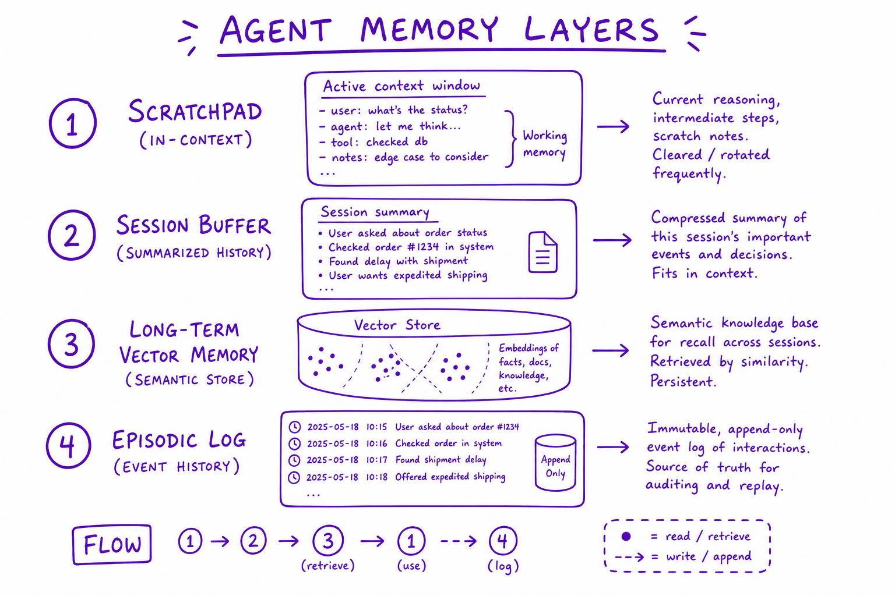
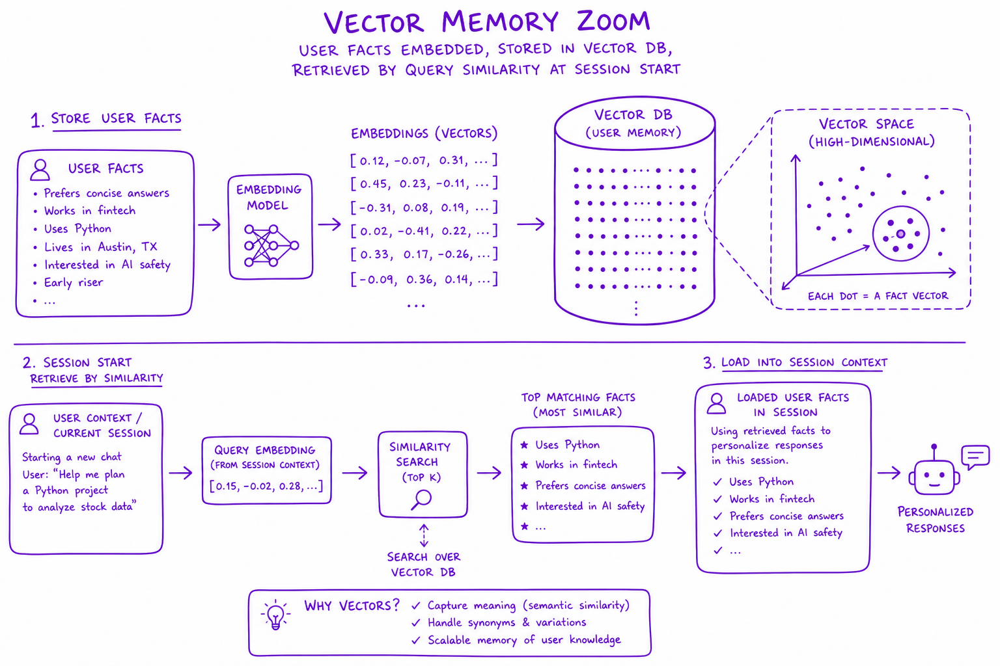
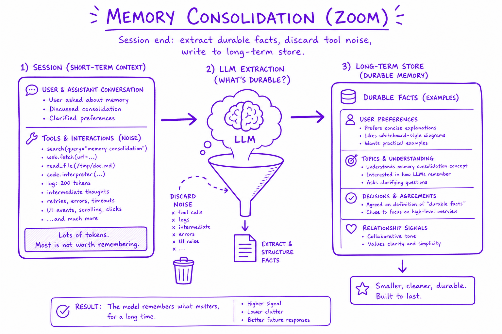

Memory & context engineering // Tools & agents
Short- and long-term memory, compaction, and context engineering, the real production skill.
01 — At a glance
Short-term scratchpad, long-term vector store, episodic summaries, and consolidation. Agents need memory — but unbounded context is not memory.

Agent memory layers: in-context scratchpad (current turn), session buffer (summarized history), long-term vector memory (user facts), episodic log (past task outcomes).
02 — New words
| Word | Meaning |
|---|---|
| Context window | The maximum number of tokens a model can read in one call: instructions, history, tool results and its own output together. |
| Working (short-term) memory | What the agent knows during one task: the messages in the current context window. Gone when the call ends unless you save it. |
| Long-term memory | Information saved outside the model (a database, a vector store, files) and loaded back into the context when relevant, across sessions. |
| Context engineering | Deciding, for every model call, exactly which tokens go into the window: what to include, compress, order and leave out. |
| Compaction | Replacing a long stretch of conversation with a shorter model-written summary so the run can continue within budget. |
| Tool-result clearing | Replacing old, already-used tool results with short stubs, keeping the record that a call happened but not its full output. |
| Prompt caching | A provider feature that stores the processed form of a repeated prompt prefix, so later calls that start with the same tokens are cheaper and faster. |
| Semantic memory | Durable facts about the user or world ("prefers email", "delivery address is ..."). |
| Episodic memory | Records of past events and interactions ("on day 140 we refunded charge ch_2"). |
| Procedural memory | Learned how-to: instructions or rules the agent should follow next time ("check pending holds before refunding"). |
| Recency decay | Down-weighting a memory the older it is, for example halving its recency score every 30 days. |
| Upsert | Write that updates an existing record if one with the same key exists, otherwise inserts. Prevents old and new versions of a fact from coexisting. |
| Lost in the middle | The observed tendency of models to use information at the start and end of a long context more reliably than information in the middle. |
| Working memory | The messages list in the current window. |
| External memory | Files/DB the agent writes and re-reads (survives compaction). |
The lesson
03 — The question
A model remembers nothing between calls. Every call starts from the tokens you send and nothing else. So everything an agent "knows", within a task or across months, is something your code chose to put in the context window. That makes two problems:
- Within a task, the context grows with every step until it is too expensive, too slow, too distracting, or simply too big.
- Across tasks, nothing carries over unless you save it, and then you must decide what to save, how to keep it correct, and what to load back.
Both are parts of one discipline, context engineering: choosing the right tokens for every call. The questions you will be asked:
- How does an agent remember things, within a conversation and across conversations?
- What do you do when a long-running agent's context fills up?
- How would you design long-term memory for a support or personal assistant? What do you store, and how do you retrieve it?
- What is context engineering, and why is it said to matter more than prompt wording?
The running example. Priya is a customer of the online shop from earlier lessons. On day 140 the support agent refunded a duplicate charge (ch_2 on ORD-482913). On day 190 she mentioned that she had moved from Pune to Bengaluru. On day 200 she writes: "I think you have been double-charging me for months. Check all my orders this year, and send the replacement for my broken lamp to my new place." Answering needs a long investigation (about 30 tool calls, each returning about 1,500 tokens) and facts from two earlier conversations. We will design what the agent holds in its context at each step and what it keeps between sessions.
04 — Step 1: the context window is the only memory the model has
Think of the model as a function that reads one document, the context, and writes a continuation. The document is assembled by your code for every call from up to six kinds of content:
┌───────────────────────── one model call ─────────────────────────┐ │ system instructions (fixed: role, rules, policies) │ │ tool definitions (fixed per agent, see tool calling) │ │ long-term memories (loaded for this user and this request) │ │ conversation so far (user turns, model turns) │ │ tool calls and results (grows every step) │ │ ...room for the output (reserved, not filled) │ └──────────────────────────────────────────────────────────────────┘
Nothing outside this box influences the model. If Priya's new address is not in it, the model cannot know it, however many databases hold it. If the result of the first get_charges call was dropped, the model cannot use it, even though it "saw" it ten steps ago. Two kinds of memory follow:
- Working memory is the box's contents during one task. It is managed by deciding what stays in the message list.
- Long-term memory is storage outside the box. It is managed by deciding what to write out after a task and what to read back in before one.
"Memory" in an agent is therefore never a property of the model. It is a read path and a write path that you design.
05 — Step 2: why a bigger window does not solve it
Windows of hundreds of thousands of tokens are common, so why not keep everything? Three costs grow with what you put in:
- Money. Input tokens are billed on every call, and an agent re-sends the context on every step (see the agent loop).
- Latency. The model must process (prefill) the whole context before writing the first output token. Prefill time grows with length; see inference internals.
- Quality. Models do not use long contexts uniformly. Facts in the middle of a long context are used less reliably than facts near the start or end ("lost in the middle"), and irrelevant material distracts: a stale address or an old failed tool result can be picked up as if it were current. Long-context quality varies by model and task, so measure it on yours rather than trusting the advertised window size.
The working rule: the window is a maximum, not a target. Fill each call with the smallest set of tokens that lets the model do the next step well.
06 — Step 3: how fast a long task fills the window
Put numbers on Priya's investigation. The fixed prefix (instructions, tool definitions, loaded memories) is 5,000 tokens. Each step adds a 200-token model turn and a 1,500-token tool result. Over 30 steps:
- The context on the last call is \(5000 + 29 \times 1700 = 54{,}300\) tokens.
- Each call re-sends everything before it, so the total input across the run is the sum \(\sum_{s=0}^{29}(5000 + 1700\,s) = 30 \times 5000 + 1700 \times 435 = 889{,}500\) tokens.
- At an illustrative $3 per million input tokens, about $2.67 for one investigation.
Total input grows with the square of the number of steps because the \(1700\,s\) term is summed. By step 30, each call is carrying 29 full tool results, most of which the agent finished using long ago: the charges for January's orders do not help it decide what to check in October. The next three steps are ways to stop carrying them.
07 — Step 4: three ways to shrink working memory
Truncation (a sliding window) keeps only the last N messages. It is simple and dangerous: the first message, Priya's request with both tasks in it, is the first thing dropped. Plain truncation suits chit-chat, not tasks. If you use it, pin the original request and the instructions so they are never dropped.
Tool-result clearing keeps every message but replaces old tool results with a short stub: [get_charges ORD-3121 result cleared; 2 charges, no duplicate; call again if needed]. The model keeps the trail of what it did and the conclusion, but not the raw payload. Keeping the last 3 results in full and stubbing older ones at 30 tokens each, the same 30-step run sends 373,530 input tokens (down from 889,500) and peaks at 16,080 tokens (down from 54,300). It is cheap, needs no extra model call, and loses little, because a result's value is mostly used up by the next decision.
Compaction asks a model to summarise the history so far into a compact state, then continues from the summary. With a trigger at 20,000 tokens and a 1,500-token summary, the run sends 354,900 tokens and peaks at 18,600. Compaction handles what clearing cannot (long user conversations, many small turns), but it costs a model call each time and it is lossy in ways you do not control: a summary can drop the one detail that later matters. Write the compaction prompt like a handover note with required fields:
- the user's goal, in their words, with all parts ("check all orders this year" and "send the replacement to the new address");
- what has been done and found so far (orders checked, duplicates found, refunds issued with ids);
- what remains, and any decisions or constraints agreed with the user;
- identifiers needed later (order ids, charge ids, refund ids).
| Strategy | Input tokens over 30 steps | Peak context | Illustrative cost | Main risk |
|---|---|---|---|---|
| Keep everything | 889,500 | 54,300 | $2.67 | Cost, latency, distraction |
| Clear old tool results (keep 3) | 373,530 | 16,080 | $1.12 | Needing an old result again (re-call the tool) |
| Compact at 20k into 1.5k | 354,900 | 18,600 | $1.06 + summary calls | The summary drops a needed detail |
A fourth option moves state out of the window entirely: give the agent a scratchpad tool or file (write_note, read_notes) and let it record findings as it goes: "ORD-3121: ok. ORD-3388: duplicate ch_9, refunded re_7." Clearing and compaction then lose nothing important, because the important part was written down. This is what long-running coding agents do with to-do files and progress notes.
08 — Step 5: prompt caching, and why order matters
Prompt caching changes the arithmetic. If consecutive calls begin with the same tokens, the provider can reuse its processing of that prefix. Cached reads are billed at a fraction of the normal input price and prefill faster. With illustrative multipliers in line with one major provider's published pricing (cache writes at 1.25 times the base input price, cache reads at 0.1 times), caching the whole growing history of the keep-everything run brings its cost from about $2.67 to about $0.45.
That is cheaper than clearing without caching, so why clear at all? Because caching fixes the bill but not the other two costs: the peak context is still 54,300 tokens, so the model still reads, and can still be distracted by, 29 stale results. And the two interact: a cache only matches an exact prefix. Every time you edit an earlier message (stubbing a result, compacting history), everything after the edit is a cache miss and must be written again. The practical design follows:
- Order the context from most stable to least stable: system instructions, then tool definitions, then long-term memories for the session, then the conversation. Anything that changes per call goes last.
- Do not put timestamps or request ids at the top of the system prompt; one changing token there invalidates the entire cache.
- Clear or compact in batches, for example when the context passes a threshold, rather than editing history on every step, so the cache stays valid between edits.
09 — Step 6: long-term memory, three kinds
On day 200, the agent needs two facts from earlier sessions: the duplicate refund on day 140 (so it does not refund the same charge again) and the new address from day 190. Neither is in today's conversation. Long-term memory is the store those facts live in between sessions. It helps to separate three kinds, because they are written, updated and read differently:
| Kind | Example for Priya | Written when | Updated how |
|---|---|---|---|
| Semantic (facts) | Delivery address: 7 Lake View, Bengaluru. Prefers email. | A durable fact is stated or confirmed | Overwritten by key: a new address replaces the old |
| Episodic (events) | Day 140: refunded duplicate charge ch_2 on ORD-482913. | After a task, as a short record | Appended; old episodes fade in relevance, they are not rewritten |
| Procedural (how-to) | For this payment provider, check for pending holds before treating two charges as duplicates. | When an approach is learned or corrected | Edited deliberately; often reviewed by a person |
A fourth source is often lumped in but is not memory: the systems of record. The refund itself lives in the payments database, and the agent should query it with a tool rather than trust a memory of it. Memory is for things that exist nowhere else (preferences, conversational context, learned procedures) and for pointers that make retrieval faster. When memory and a system of record disagree, the system of record wins.
10 — Step 7: the write path, deciding what to remember
Most memory systems fail on the write path, not the read path: they store too much, store it badly, or never correct it. A sound write path has four stages:
- Extract. After a session (or every few turns), a model call reads the transcript and proposes candidate memories in a fixed structure: kind, key (for facts), text, importance from 0 to 1, source (which session and turn).
- Filter by a policy. Keep what is durable, specific to this user, and likely to be useful later. Drop small talk, one-off details, things the system of record already holds, and anything sensitive you have no reason to keep (card numbers, health details, passwords). This policy is a product and privacy decision, not just a prompt.
- Reconcile with what is stored. For each candidate, look for an existing memory with the same key or very similar text. Then add, update, or ignore. "Moved to Bengaluru" must update the address, not sit next to the Pune address.
- Store with metadata: timestamp, source, importance, and what it superseded. Provenance lets you show the user why the agent believes something, and deletion requests ("forget my address") must be able to find and remove every copy.
The reconcile stage is what keeps memory correct over months. Without it, every changed fact leaves a contradiction behind, and the read path has to guess which version is current.
11 — Step 8: the read path, scoring what to load
Before answering on day 200, the agent retrieves a few memories relevant to the request and puts them in the context, with their dates. A common scoring rule, popularised by research on generative agents, combines three signals:
\[ \text{score} = \text{similarity} + \text{recency} + \text{importance}, \qquad \text{recency} = 0.5^{\,\text{age in days} / h} \]Similarity is the cosine similarity between the request's embedding and the memory's (see embeddings); recency halves every \(h\) days (here \(h = 30\)); importance was set at write time. In practice the three terms are often weighted; equal weights keep the arithmetic visible.
Suppose the write path had not reconciled, so both addresses are stored. For the request "which address should the replacement go to?", with illustrative similarities:
| Memory | Similarity | Age (days) | Recency | Importance | Score |
|---|---|---|---|---|---|
| Address: 7 Lake View, Bengaluru | 0.58 | 10 | 0.794 | 0.8 | 2.17 |
| Address: 14 MG Road, Pune | 0.62 | 200 | 0.010 | 0.8 | 1.43 |
| Prefers email, not SMS | 0.10 | 30 | 0.500 | 0.5 | 1.10 |
| Refunded ch_2 on ORD-482913 | 0.15 | 60 | 0.250 | 0.6 | 1.00 |
Two lessons. Similarity alone would have ranked the old Pune address first (0.62 beats 0.58): wording, not truth, decides similarity. Recency rescues the ranking here. But the stale address still makes the top three and enters the context, where the model may use it. Scoring can only make a contradiction less likely to win; the reconcile step in the write path removes it. Fix contradictions when writing, and use recency as a safety net, not the mechanism.
Two more read-path rules: put memories in the context with their dates and sources ("[day 190, from chat] new address ..."), so the model can reason about staleness; and load few of them. Five relevant memories help; fifty half-relevant ones are the distraction problem from Step 2 again.
12 — Step 9: context engineering, the whole discipline
Steps 1 to 8 are instances of one job. For every model call, decide:
- Select: which instructions, tools, memories, documents and history this step needs. Fewer tools per call (see tool calling) and fewer, better-chosen documents (see the RAG pipeline) are both context engineering.
- Compress: clear used tool results, compact long histories, return compact tool outputs in the first place.
- Order: stable content first for caching; the user's current request and the most decision-relevant facts near the end, where models attend most reliably; never bury the key constraint in the middle of a long dump.
- Isolate: give a sub-task its own fresh context. A sub-agent can spend 40,000 tokens reading Priya's 30 orders and return a 500-token report ("2 duplicates found: ORD-3388 ch_9, ORD-4410 ch_14"); the main agent's context grows by 500 tokens, not 40,000. See multi-agent systems.
- Persist: write what must survive (notes, memories) outside the window, so that compressing the window loses nothing that matters.
The reason it is called the real production skill: two agents with the same model, prompt and tools can differ widely in cost and accuracy purely because of what each one puts in the window on step 17.
13 — A worked design for Priya's day-200 request
- Session start. Load the stable prefix (instructions, tools: 5,000 tokens, cached). Retrieve memories for "double-charged, orders this year, replacement, new place": the Bengaluru address (reconciled; the Pune one was superseded), the day-140 refund episode, the email preference. Insert them with dates, about 150 tokens.
- Investigation. Hand the 30-order audit to a sub-agent with a fresh context and a scratchpad. It clears old tool results as it goes, records each finding in notes, and returns a 500-token report. It does not re-flag ch_2 as a new duplicate, because the episode memory and the payments tool both show it was refunded.
- Main thread. The main agent's context holds the request, three memories and the report: under 7,000 tokens. It proposes two refunds (approval required) and the replacement to the Bengaluru address.
- Session end. The write path extracts candidates: two new refund episodes (append), "address confirmed: Bengaluru" (update the timestamp of the existing fact), nothing about the lamp's colour (one-off, dropped).
14 — In code: a working-memory simulator and a memory store
Both blocks run as-is. The first reproduces the Step 4 table:
PREFIX, RESULT, OUTPUT, STEPS = 5_000, 1_500, 200, 30 # tokens def simulate(strategy, keep_results=3, compact_at=20_000, summary_tokens=1_500): history = [] # [kind, tokens] for each message after the fixed prefix sent = peak = 0 for step in range(STEPS): context = PREFIX + sum(t for _, t in history) sent += context # every call re-sends the context peak = max(peak, context) history += [["assistant", OUTPUT], ["tool_result", RESULT]] if strategy == "clear": # old results -> 30-token stubs results = [m for m in history if m[0] == "tool_result"] for m in results[:-keep_results]: m[0], m[1] = "stub", 30 # "[result of get_charges cleared; call again if needed]" if strategy == "compact" and PREFIX + sum(t for _, t in history) > compact_at: history = [["summary", summary_tokens]] # an LLM call writes this in practice return sent, peak for s in ("keep everything", "clear", "compact"): sent, peak = simulate(s) print(f"{s:16s} input tokens sent {sent:>8,} peak context {peak:>6,} cost ${sent * 3 / 1e6:.2f}")
Output: 889,500 / 54,300 / $2.67 for keeping everything, 373,530 / 16,080 / $1.12 for clearing, 354,900 / 18,600 / $1.06 for compaction. Try keep_results=1 or a lower compact_at and watch the trade between tokens and how much raw detail survives.
The second is a minimal long-term store: upsert by key on the write path, similarity plus recency plus importance on the read path (TF-IDF similarity stands in for an embedding model):
from sklearn.feature_extraction.text import TfidfVectorizer from sklearn.metrics.pairwise import cosine_similarity class MemoryStore: """Long-term memory for one user. Facts with a key are upserted, so a new value supersedes the old one instead of sitting next to it.""" def __init__(self, half_life_days=30): self.items, self.half_life = {}, half_life_days def write(self, text, day, importance, key=None): k = key or f"episode-{len(self.items)}" old = self.items.get(k) self.items[k] = {"text": text, "day": day, "importance": importance, "supersedes": old["text"] if old else None} def read(self, query, today, k=3): keys = list(self.items) texts = [self.items[x]["text"] for x in keys] vec = TfidfVectorizer().fit(texts + [query]) sims = cosine_similarity(vec.transform([query]), vec.transform(texts))[0] scored = [] for key, sim in zip(keys, sims): m = self.items[key] recency = 0.5 ** ((today - m["day"]) / self.half_life) scored.append((round(sim + recency + m["importance"], 2), m["text"])) return sorted(scored, reverse=True)[:k] mem = MemoryStore() mem.write("Delivery address: 14 MG Road, Pune", day=0, importance=0.8, key="delivery_address") mem.write("Prefers email updates, not SMS", day=170, importance=0.5, key="contact_pref") mem.write("Refunded duplicate charge ch_2 on ORD-482913", day=140, importance=0.6) mem.write("Delivery address: 7 Lake View, Bengaluru", day=190, importance=0.8, key="delivery_address") for score, text in mem.read("which delivery address should the replacement go to?", today=200): print(score, text) print("superseded:", mem.items["delivery_address"]["supersedes"])
It prints the Bengaluru address first (score 1.82), then the email preference (1.0) and the refund episode (0.85); the Pune address is gone from the store and recorded only as what the new fact superseded. Remove key="delivery_address" from the last write and both addresses come back, the old one included: the contradiction the read path cannot fully fix. In production the store is a database table plus a vector index, the extraction is a model call with a schema, and every memory carries the user id so retrieval can never cross users.
Quick reference
15 — What & Why
Agents need prior context across turns and sessions. Memory systems trade recall fidelity vs token cost vs latency.
16 — Core Concepts
| Term | Definition | Gotcha |
|---|---|---|
| Scratchpad | Current reasoning + tool results in context | Grows unbounded without pruning |
| Semantic memory | Embedded facts retrievable by similarity | Stale facts without TTL |
| Episodic memory | Past task trajectories and outcomes | Privacy: user data isolation |
17 — API Surface
memory.store(user_id, text, metadata={type:"preference"})
memory.search(user_id, query, top_k=5) -> memories[]
memory.summarize(session_id) -> summary # compress buffer18 — When to Use / When NOT
| Type | Use When | Skip When |
|---|---|---|
| Full history | Short sessions <10 turns | Long chats — exceeds context |
| Vector memory | User prefs, facts across sessions | Single-turn Q&A |
19 — Architecture
Turn -> Scratchpad -> [if tokens > budget] Summarize -> Long-term store (embed) Query -> Retrieve relevant memories -> Inject into system prompt
20 — Deep Dive: Scratchpad
The scratchpad is the agent's working memory inside the context window: its thoughts, tool calls, tool results and observations for the current task.
- It grows with every step, so it is the first thing to overflow the window.
- Keep the last few tool results in full (often the last three) and truncate or summarize older observations.
- Keep decisions and open items when compacting; drop raw tool output once its conclusion is recorded.
- Cleared when the task ends. Anything worth keeping is written to long-term memory first.
21 — Deep Dive: Long-Term Vector Memory

User facts embedded and stored in vector DB; retrieved by query similarity at session start
Mem0, Zep, custom pgvector. Store extracted facts not raw chat. user_id namespace isolation.
22 — Deep Dive: Episodic Memory
Episodic memory records what happened in past runs, so the agent can reuse what worked.
- Each episode stores the task, the plan, the actions taken, the outcome and whether it succeeded.
- It is append-only, which also makes it an audit log you can replay.
- When a new task resembles a past one (by embedding similarity or task type), retrieve the successful episodes and offer their plan as an example.
- Failed episodes are useful too: they tell the agent which approach not to repeat.
23 — Deep Dive: Consolidation

Session end: LLM extracts durable facts, discards ephemeral tool noise, writes to long-term store
End-of-session job: extract preferences, delete contradictions, TTL on time-sensitive facts.
24 — Deep Dive: Memory Retrieval
At session start: embed user message, search memory top-5, inject as system context. Re-rank by recency × relevance.
More detail
25 — Memory: making agents remember
Models are stateless. "Memory" is a system you build. It exists because the context window is finite — memory decides what to keep and what to reload.
Every "the agent remembered!" moment is plumbing: something wrote text to a store earlier, and something injected it into the context now. There is no third mechanism. Once you see memory as write policy + storage + read policy, the five classic types below stop being taxonomy trivia and become five different answers to "what do we write, where, and when do we read it back?"
| Type | What it holds | How it's implemented |
|---|---|---|
| Working / short-term | the current conversation | the messages list this turn |
| Episodic | past interactions/events | embed old turns → vector store → retrieve relevant ones |
| Semantic | facts & knowledge | RAG over a knowledge base |
| Procedural | how-to / skills / routines | updatable instructions in the system prompt |
| External | durable notes, plans, artifacts | files / DB the agent reads & writes |
26 — Working memory: a buffer that knows when to shrink
The messages list is working memory, and its failure mode is simply growing until it degrades quality and burns money. The fix is a buffer object that watches its own token count and summarizes the oldest turns past a threshold — the summarization trigger is the design decision, not the summary itself.
class ConversationBuffer: """messages list that compresses itself past a token threshold.""" def __init__(self, count_tokens, llm, max_tokens=30_000, keep_recent=6): self.msgs, self.count, self.llm = [], count_tokens, llm self.max_tokens, self.keep_recent = max_tokens, keep_recent self.summary = "" # rolling summary of evicted turns def append(self, msg): self.msgs.append(msg) if self._tokens() > self.max_tokens: # TRIGGER: threshold, not every turn self._compress() def _tokens(self): return sum(self.count(json.dumps(m)) for m in self.msgs) def _compress(self): old, self.msgs = self.msgs[:-self.keep_recent], self.msgs[-self.keep_recent:] self.summary = self.llm( f"Update the running summary with the new turns.\n" f"PRESERVE: decisions made, facts stated, open tasks, IDs, file paths.\n" f"Current summary:\n{self.summary}\n\nNew turns:\n{render(old)}") def view(self): # what actually goes to the API head = ([{"role": "user", "content": f"[SUMMARY OF EARLIER CONVERSATION]\n{self.summary}"}] if self.summary else []) return head + self.msgs
Details that matter: the trigger fires on tokens, not message count (one message can be a 40k-token tool result); the last keep_recent turns stay verbatim because the model needs exact recent wording, not a paraphrase; and the summary is rolling — each compression folds new turns into the existing summary rather than re-summarizing from scratch, keeping compression cost O(evicted turns), not O(history). Worked numbers (illustrative): a 100-turn support session averaging 400 tokens/turn is 40k tokens raw. With max_tokens=30_000 this buffer compresses twice, and turn 100 is answered against ~2k of summary + ~2.4k of recent turns ≈ 4.4k instead of 40k — a ~9× input-cost cut, and (just as important) the model isn't wading through 90 stale turns to find the current question.
27 — Episodic memory: remember/recall over a vector store
Working memory dies with the session. Episodic memory is the cross-session store: embed notable moments, retrieve the relevant ones next time. The original sketch, now with the parts a real one needs — dedupe on write and score-thresholded, time-aware reads:
class EpisodicMemory: def __init__(self, db, embed, col="memories"): self.db, self.embed, self.col = db, embed, col def remember(self, text, kind="event", user_id=None): vec = self.embed([text])[0] # dedupe: if a near-identical memory exists, skip the write near = self.db.search(self.col, vec, limit=1) if near and near[0].score > 0.95: return near[0].id # already known mid = str(uuid.uuid4()) self.db.upsert(self.col, [{"id": mid, "vector": vec, "payload": {"text": text, "kind": kind, "user_id": user_id, "ts": time.time()}}]) return mid def recall(self, query, k=4, min_score=0.35, user_id=None): hits = self.db.search(self.col, self.embed([query])[0], limit=k * 3, filter={"user_id": user_id} if user_id else None) good = [h for h in hits if h.score >= min_score][:k] # relevance floor return sorted(good, key=lambda h: h.payload["ts"]) # oldest→newest def inject_memories(mem, user_msg, user_id): hits = mem.recall(user_msg, user_id=user_id) if not hits: return user_msg lines = "\n".join(f"- [{iso(h.payload['ts'])}] {h.payload['text']}" for h in hits) return (f"Relevant memories from past sessions (may be stale — verify " f"anything critical):\n{lines}\n\n---\n{user_msg}")
Three non-obvious choices here. The relevance floor: vector search always returns something, and without min_score an unrelated question drags in four random memories that actively mislead. The dedupe check: agents restate the same fact constantly; without it, "user prefers Python" ends up stored 30 times and crowds out everything else in every recall. The staleness disclaimer in the injection: memories are claims about the past, and the model should treat them as evidence, not gospel — "may be stale" measurably reduces the model doubling down on outdated facts.
28 — Fact extraction: from transcripts to a profile
Episodic recall answers "what happened related to X?" But some knowledge should be always present, not retrieved-if-relevant: the user's name, plan tier, stack, standing preferences. That's a profile — a small structured document, built by running an extraction pass after each session, and injected into the system prompt whole (it's tiny).
PROFILE_SCHEMA = {"name": None, "role": None, "stack": [], "preferences": [],
"constraints": [], "current_projects": []}
def update_profile(llm, profile: dict, transcript: str) -> dict:
raw = llm(f"""Extract durable facts about the USER from this session.
Rules:
- Only facts stated by the user about themselves/their work. No inferences.
- Durable means: still true in a month. "It's raining" is NOT durable.
- If a new fact CONTRADICTS the profile, the new fact wins; drop the old.
Current profile:\n{json.dumps(profile)}
Transcript:\n{transcript[-20_000:]}
Return the FULL updated profile as JSON matching the same schema.""")
try:
new = json.loads(raw)
assert set(new) <= set(PROFILE_SCHEMA) # schema drift guard
return new
except (json.JSONDecodeError, AssertionError):
return profile # bad extraction? keep old
# each session starts with:
# SYSTEM += f"\nWhat you know about this user:\n{json.dumps(profile, indent=1)}"The contradiction rule is the whole game: profiles must be updatable, not append-only. "User is migrating to Postgres" (March) must replace "user runs MySQL" (January), or the agent gives confidently wrong advice forever. Note also the fail-safe: a botched extraction keeps the old profile rather than corrupting it — memory writes should never be able to make the system dumber than doing nothing.
29 — External memory: the file the agent keeps
The "write to a file" trick
A robust, inspectable pattern: the agent keeps a plan/notes file and re-reads it each turn. It survives context compaction, you can debug it, and it doubles as an audit log. Simple beats clever.Concretely, this is just two tools plus a system-prompt contract:
PAD = pathlib.Path("workdir/scratchpad.md") def read_scratchpad() -> str: return PAD.read_text() if PAD.exists() else "(empty)" def write_scratchpad(content: str) -> str: if len(content) > 8_000: # keep it a scratchpad, not a dump return "ERROR: scratchpad limit 8000 chars. Summarize before writing." PAD.write_text(content); return "saved" SYSTEM += """ You have a persistent scratchpad file. At the START of a task, read it. Keep it updated: your plan, checked-off steps, key findings, IDs and paths. It is your only memory that survives interruptions — write anything you cannot afford to re-derive."""
Why this humble pattern outperforms fancier memory for long tasks: the model chooses what's worth writing (it knows what it'll need better than your heuristics do), the file survives compaction and process restarts, and when the run goes sideways you open the file and read the agent's own account of what it thought it was doing. Coding agents in the wild lean heavily on exactly this — a plan/notes markdown file per task. The size cap matters: uncapped scratchpads become a second unbounded context window, re-ingested every turn.
Semantic memory (facts about the world → RAG, Knowledge & RAG, Tool calling) and procedural memory (instructions that update — really just the profile pattern applied to behavior: "user wants diffs, not full files" ends up as a standing instruction) complete the table; both reuse machinery you've already seen, which is the quiet point of this topic — memory types differ in policy, barely in mechanism.
30 — The write policy: what NOT to store
Everyone designs the read path; the write path is where memory systems actually die. Store too little and the agent is a goldfish. Store too much and recall returns noise, the profile bloats, and you've built a privacy liability. Rules that hold up:
- Don't store what you can re-derive. Tool outputs, retrieved documents, computed results — the source of truth already exists; store the pointer ("order data lives in orders_db, key = email"), not the copy that will silently go stale.
- Don't store transient state as durable fact. "The build is broken" is true for an afternoon. Written to episodic memory, it resurfaces in a recall three weeks later as ambient falsehood. Tag event-memories with timestamps and let recall favor recency for anything state-like.
- Don't store secrets or regulated data. API keys, passwords, payment details, health data pasted mid-session — a memory store is a new copy of that data with a new access path and (usually) no deletion story. Filter writes; if the user must be remembered as "has an API key configured," store that, never the key.
- Don't store the model's own speculation as fact. "The user probably works in fintech" written today is retrieved tomorrow as "the user works in fintech." Extraction prompts must demand stated facts only (see the
No inferencesrule above) — memory laundering turns guesses into ground truth. - Do store: explicit user corrections ("no, staging is eu-west-1"), decisions and their reasons, stable preferences, open commitments ("promised a follow-up on the refund"), and hard-won findings that cost many steps to derive.
- Give memory a deletion story. TTLs on event-type memories, a user-visible "what do you know about me" view, and a delete path. This is a compliance requirement in most jurisdictions and a trust feature everywhere.
Memory failure modes that only show up later
(1) Poisoning: one wrong stored "fact" (a typo'd hostname, a sarcastic user message taken literally) gets recalled, restated by the model, re-extracted, and re-stored — now it has three copies and citation-like authority. Mitigate: dedupe on write, provenance in payloads ("stated by user 2026-03-14"), and periodic pruning passes. (2) Cross-user leakage: forget theuser_id filter once and user A's "prefers aggressive refunds" surfaces in user B's session — always filter at the store layer, never trust the prompt to ignore it. (3) Recall crowding: 30 duplicates of one preference fill all k slots, so nothing else is ever recalled — this looks exactly like "memory stopped working." (4) Summary-then-need: working-memory compression drops the one order ID you need 30 turns later — the preserve-list in the compression prompt (IDs, paths, decisions) is load-bearing, not decoration (the next topic goes deep).| Store | Write trigger | Read trigger | Size discipline | Dies when… |
|---|---|---|---|---|
| Conversation buffer | every turn | every call (it IS the context) | token threshold → rolling summary | trigger fires on count, not tokens |
| Episodic (vector) | notable events, deduped | similarity to current input, score-floored | TTL + prune passes | no relevance floor; no user filter |
| Profile (facts) | end-of-session extraction | always injected (system prompt) | fixed schema, contradictions replace | append-only growth; inferences stored |
| Scratchpad (file) | the agent decides | start of task + on demand | hard char cap | becomes a dump nobody re-reads |
Mini-scenario: the assistant that "forgot" a promise
Your support agent tells a customer "I'll flag this for a refund review — we'll follow up within 48 h." Session ends. The follow-up never happens: the promise lived only in working memory, which evaporated. The fix isn't more retrieval — it's recognizing that commitments are writes. You add one rule to the extraction pass: open commitments go to afollowups table with a due date, and a cron job re-opens sessions that owe one. Memory design is mostly noticing which utterances are actually state changes.Takeaway
Memory = write policy + store + read policy, per type: buffer (always write, threshold-compress, always read), episodic (write selectively with dedupe, read by similarity with a floor), profile (extract stated facts, replace on contradiction, always inject), scratchpad (agent-directed, capped, re-read each task). The write policy — especially what you refuse to store — determines whether the system still works in month three.Exercises
- Implement
ConversationBufferand run a scripted 60-turn conversation through it. Verify: compression fires on token count, the last 6 turns stay verbatim, and a fact from turn 3 (an order ID in the preserve-list) survives into the turn-60 view. - Build
EpisodicMemoryon any vector store (or a list + cosine in numpy). Write 20 memories including 5 near-duplicates; confirm dedupe stores ~16, and thatmin_scorereturns zero hits for an unrelated query instead of the nearest garbage. - Run the profile extractor over three synthetic sessions where a fact changes (MySQL → "migrating to Postgres" → "fully on Postgres"). Verify the final profile has one stack entry, not three.
- Add the scratchpad tools to your The agent loop and give it a 15-step task. Kill the process at step 8, restart, and confirm the agent resumes from the file rather than starting over.
- Write a
should_store(text)filter implementing the write policy: rejects secrets (regex for keys/tokens), transient state, and model speculation ("probably", "seems like"). Unit-test it on 15 candidate memories, including 3 adversarial ones.
31 — Context engineering — the real production skill
Bigger than prompt engineering. The job: decide what's in the window each turn, because it's finite and quality drops as it fills.
Prompt engineering asks "how do I phrase this?" Context engineering asks "of everything I could put in the window — system prompt, tool schemas, history, retrieved documents, memories, scratchpad — what earns its tokens this turn?" Two facts make this the job. First, the window is a hard budget: overflow is an API error. Second, and less obvious: quality degrades before you hit the limit. Long contexts bury the needle — models attend less reliably to material in the middle of a 150k-token window, and every irrelevant document you "helpfully" include is a distractor competing with the relevant one. More context is not more better; more relevant context is.
Token budgeting
WINDOW=200_000; RESERVE_OUT=4_000 budget = WINDOW - RESERVE_OUT - count(SYSTEM) - count(tools_schema) while count(history) > budget*0.6: history = compact(history) # keep history lean retrieved = retrieve(q)[:budget_left()] # RAG fills the rest, capped
That sketch is the idea; production wants it as a class — one owner for the arithmetic, so no call site can quietly blow the window:
class ContextBudget: """Explicit allocation of the context window. All numbers are tokens.""" def __init__(self, count_tokens, window=200_000, reserve_output=4_000, headroom=0.10): self.count = count_tokens # provider tokenizer, or estimate self.window, self.reserve_out = window, reserve_output self.headroom = int(window * headroom) # slack for counting error/growth self.spent = {} # component → tokens def charge(self, name, text_or_msgs) -> int: n = (self.count(text_or_msgs) if isinstance(text_or_msgs, str) else sum(self.count(json.dumps(m)) for m in text_or_msgs)) self.spent[name] = self.spent.get(name, 0) + n return n def remaining(self) -> int: used = sum(self.spent.values()) return self.window - self.reserve_out - self.headroom - used def fit(self, name, chunks, per_chunk_overhead=10) -> list: """Greedy-fill ranked chunks (best first) into what's left.""" out, left = [], self.remaining() for c in chunks: n = self.count(c) + per_chunk_overhead if n > left: break # ranked list → stop at first miss out.append(c); left -= n self.charge(name, "".join(out)) return out def report(self) -> str: # log this every turn in dev lines = [f"{k:>12}: {v:>7,}" for k, v in self.spent.items()] return "\n".join(lines + [f"{'remaining':>12}: {self.remaining():>7,}"]) # per turn: bud = ContextBudget(count_tokens) bud.charge("system", SYSTEM); bud.charge("tools", json.dumps(tools)) if bud.charge("history", buffer.view()) > 0.5 * bud.window: buffer.compress(); bud.spent["history"] = bud.charge("history", buffer.view()) docs = bud.fit("rag", ranked_chunks) # RAG gets whatever's left
The design choice worth stealing is the allocation order: fixed costs first (system, tools — you can't shrink them per-turn), then history (shrinkable via compaction), then retrieval (elastic — it takes whatever remains). And the report(): the first time you print it you'll usually find a surprise, like tool schemas eating 9k tokens because someone pasted three example outputs into a description. Worked example (illustrative): system 3k + tools 6k + history 41k + retrieval 30k = 80k input per turn at ~$3/M is $0.24/turn. After compaction (history → 8k) and top-4 retrieval instead of top-12 (→ 10k): 27k/turn ≈ $0.08 — and answer quality typically rises, because the 8 dropped chunks were mostly distractors.
Compaction — summarize old turns (how long sessions survive)
def compact(msgs): head, tail = msgs[:-6], msgs[-6:] # keep last 6 turns raw s = llm("Summarize. PRESERVE: decisions, facts, open tasks, IDs, file paths." + render(head)) return [{"role":"user","content":f"[EARLIER SUMMARY]\n{s}"}] + tail
The preserve-list is the entire art. Here's the productionized version — an explicit, extensible list, plus a verification pass that checks the summary didn't lose pinned strings:
PRESERVE = ["decisions made and their stated reasons", "user-stated facts, preferences, corrections", "open tasks / promises / unresolved questions", "exact identifiers: order numbers, ticket IDs, emails, amounts", "exact file paths, URLs, branch names, error strings", "constraints ruled OUT (things we tried that failed, and why)"] PIN_RE = re.compile(r"\b(?:[A-Z]{2,5}-\d+|#\d{4,}|ORD[_-]?\w+|/[\w./-]{6,}" r"|[\w.+-]+@[\w-]+\.\w+)\b") # ids, paths, emails def compact(llm, msgs, keep_recent=6): head, tail = msgs[:-keep_recent], msgs[-keep_recent:] raw = render(head) pins = sorted(set(PIN_RE.findall(raw))) # strings that MUST survive s = llm("Summarize this conversation for an assistant that will continue it.\n" "PRESERVE, verbatim where applicable:\n- " + "\n- ".join(PRESERVE) + f"\nThese exact strings MUST appear: {pins}\n\n{raw}") lost = [p for p in pins if p not in s] if lost: # verify — cheap and priceless s += "\n[preserved identifiers]: " + ", ".join(lost) return [{"role": "user", "content": f"[EARLIER SUMMARY]\n{s}"}] + tail
What a good vs bad summary keeps — same 40-turn refund-investigation session, two summaries:
BAD (fluent, useless): "The user contacted support about a billing issue. The assistant investigated several orders and payment records, discussed refund policy, and they worked toward a resolution. The tone was cooperative." GOOD (dense, continuable): "User maria.g@example.com disputes duplicate charge on ORD-88231 (2×$149.99, 2026-08-30). VERIFIED: second charge is a distinct order ORD-88232 created 41s later, same cart — likely double-submit. DECIDED: refund ORD-88232 in full (policy §4.2, <30 days). Refund API returned RF-5521 status=pending. OPEN: (1) confirm RF-5521 settles within 48h, (2) user asked for invoice PDF — not yet sent. RULED OUT: fraud (device match), subscription renewal (none active)."
Every sentence of the bad summary is true, and the next 30 turns are doomed: turn 55's "so was that second charge fraudulent?" forces re-investigation the model already did — or worse, a fresh guess that contradicts the earlier finding. The good summary is barely longer, and notice its shape mirrors the preserve-list: identifiers verbatim, decisions with reasons, open items, and — most often forgotten — negative results. "RULED OUT: fraud" is what stops the agent from re-walking dead ends; dropped negatives are the classic silent compaction loss.
Prompt caching — static first → ~90% cheaper repeated input
system=[{"type":"text","text":BIG_STATIC_SYSTEM,
"cache_control":{"type":"ephemeral"}}] # everything above is cached
# prefix must be BYTE-IDENTICAL across calls → pin prompt versions; volatile content LAST.Mechanics. Providers cache the internal state (the processed prefix) keyed on the exact byte sequence of everything up to the cache marker. On the next call, if the prefix matches byte-for-byte, the provider skips reprocessing it and bills those tokens at a deep discount (on Anthropic's scheme: cache writes cost ~1.25× base input, cache reads ~0.1×; entries expire after ~5 minutes of disuse unless refreshed by another hit). Three consequences fall out of "byte-identical prefix": (1) order your prompt static→volatile: system prompt and tool schemas first, per-user profile next, conversation last — one changed byte at position N invalidates everything after N; (2) a timestamp or request-ID in the system prompt destroys caching entirely (a depressingly common self-inflicted wound); (3) agent loops are the perfect cache customer, because each step re-sends the previous steps verbatim — the growing history is itself a stable prefix, so you also mark the last message with a cache point on providers that support incremental (multi-breakpoint) caching.
Cache-hit arithmetic (illustrative prices: $3/M input, $0.30/M cached read, $3.75/M cache write). A 10-step agent run with 5k of static prefix (system+tools) and history growing ~3k/step:
| Scenario | Input tokens billed (10 steps) | Input cost |
|---|---|---|
| No caching — every step re-sends everything | 5k+8k+11k+…+32k ≈ 185k @ $3/M | ≈ $0.555 |
| Cache static prefix only (5k) | write 5k once + 9 reads of 5k + ~135k fresh @ $3/M | ≈ $0.44 |
| Incremental caching of the whole transcript | each step: read all prior (~0.1×) + write only its new ~3k | ≈ $0.17 |
~3× cheaper on the same tokens, and cached tokens also skip reprocessing so time-to-first-token drops on every step. At fleet scale this is the difference between agents being affordable and not: 100k runs/day × $0.38 saved ≈ $38k/day (illustrative, but the ratio is real). The gotcha is the 5-minute TTL: a user who replies after 6 minutes pays the write price again — fine, unless your "optimization" assumed 100% hit rate in the unit economics.
Sub-agents as context isolation
A major reason to go multi-agent (Multi-agent systems) is memory management, not just specialization: a sub-agent runs in its own clean window and returns only a distilled result, keeping the parent's context lean.In code, isolation is just: fresh messages list, task-scoped prompt, and a contract on the return size — the parent never sees the sub-agent's working mess:
async def run_subagent(task: str, tools, impls, *, max_return_tokens=800): """Fresh context; the parent pays only for `task` in and the digest out.""" sub_system = (f"You are a focused sub-agent. Complete ONLY this task:\n{task}\n" f"Your final message is your report to the orchestrator: " f"≤{max_return_tokens} tokens, findings + citations only — " f"no narration of your process.") text, usage = await run_agent(task, tools, impls, # ch. 52's loop — max_steps=10) # its OWN msgs list if count_tokens(text) > max_return_tokens: # enforce the contract text = await llm(f"Compress to ≤{max_return_tokens} tokens. Keep all " f"identifiers, numbers and citations:\n{text}") return text # parent sees ONLY this # parent — three investigations, zero pollution of the parent window: digests = await asyncio.gather( run_subagent("Analyze error logs for service A, 06:00-09:00. Top 3 causes.", T, I), run_subagent("Check deploy diffs merged in the same window. Risky changes?", T, I), run_subagent("Summarize related incident tickets from the last 90 days.", T, I)) answer = await llm(SYNTH_PROMPT + "\n\n".join(digests)) # ~2.4k tokens, not 300k
The arithmetic that justifies it: each sub-investigation might churn through 100k tokens of logs and diffs. Done inline, the parent's window holds ~300k tokens of raw material (over the limit, and mostly noise by synthesis time). With sub-agents, the parent's window holds three ~800-token digests. The parent stays cheap, cacheable, and sharp for the actual decision; the expensive mess was spent in disposable windows. That's context engineering's whole thesis in one pattern: spend tokens where they inform the next decision; quarantine tokens that don't.
32 — The per-turn checklist
- System prompt: static, versioned, cache-marked. No timestamps, no per-request IDs.
- Tools: only the tools this task can need — 20 schemas the model never calls are pure distractor cost. Route first, then expose.
- History: compact past the threshold; preserve-list with pins; recent turns raw.
- Retrieval: ranked, floored (min relevance), capped by remaining budget — never "top-20 just in case."
- Memories/profile: small, always-on facts in the prefix (cacheable); episodic recalls only above a score floor.
- Big jobs: quarantined into sub-agents that return digests with size contracts.
- Log the budget report: if you can't say where your input tokens went last turn, you're not doing context engineering yet.
Mini-scenario: the agent that got dumber every hour
Your ops agent works great at 9 am and is useless by lunch. Nothing changed — except its context. Each incident investigation appended raw kubectl output (8–20k tokens a pop); by turn 60 the window held 140k tokens, 90% of it stale pod listings. Symptoms: it re-asks answered questions, misses the one relevant line, and each turn costs 6× the morning rate. The fix took an afternoon: truncate tool results to 2k with a "full output at <path>" pointer, compaction at 50k with the pin-verification above, and logbud.report() per turn. Same model, same prompts — the agent "got smarter" purely by carrying less. When quality degrades over a session's lifetime, suspect the context before the model.Compaction gotcha
A naive summary silently drops the one ID/decision you needed 30 turns later. Always pin "what to preserve," and keep recent turns raw. Related traps: (1) compacting mid tool-exchange — never summarize away an assistant tool_use whose tool_result is still in the tail, or the API rejects the transcript; compact only at turn boundaries. (2) Summarizing the summary: after 3–4 generations of rolling compaction, early facts have been paraphrased four times — pin-verification catches IDs, but decisions blur; re-anchor critical state in external memory (the scratchpad file, an earlier topic) instead of letting it live only in summaries. (3) Cache-oblivious compaction: every compaction rewrites the transcript prefix and invalidates your incremental cache — batch compactions (compact rarely, cut deep) rather than trimming a little every turn.Takeaway
Context engineering is a budget problem with four levers: allocate (explicit per-component budgets, elastic retrieval last), compress (compaction with preserve-lists and pin checks), reuse (caching: static first, byte-identical, volatile last), and isolate (sub-agents return digests, not transcripts). The teams whose agents feel "smart all day" aren't using secret models — they're just refusing to let junk tokens ride along.Exercises
- Wire
ContextBudgetinto your The agent loop and logreport()every step of a 10-step run. Identify the largest component and the step where history overtakes retrieval. - Take a real 30+ turn transcript (or generate one) containing at least 5 identifiers. Run naive
compact()andcompact_v2(); then ask 5 questions whose answers live in the compacted head. Score both summaries on answers recovered. - Measure caching empirically: run the same 8-step agent task with and without
cache_controlmarkers, and compare billed input tokens from the usage fields. Compute your actual savings ratio and compare to the table's estimate. - Add a timestamp to your system prompt, rerun exercise 3, and confirm the cache hit rate drops to zero. (Cheap lesson now, expensive lesson later.)
- Convert one inline "read many documents then answer" task into the sub-agent pattern with an 800-token return contract. Compare: parent-window peak tokens, total cost, and answer quality on 5 test questions.
33 — Context and memory management
- Long tasks overflow the context window and degrade quality before they hit the limit.
- Compaction: summarize older turns and tool outputs, keep decisions and open items.
- External memory: write notes/state to a file or DB, read back as needed (a scratchpad or to-do list).
- Sub-agents: hand a focused sub-task to a fresh context, get back only a summary. Keeps the main context clean.
- Prompt caching of the stable prefix (system prompt, tool definitions) cuts cost and latency a lot.
In production
34 — Production & Ops
- GDPR delete by user_id across memory stores
- Don't store secrets/PII without encryption
- Memory write audit log
36 — Where people get lost
- Dumping full chat history — context overflow
- Storing contradictory facts without merge
- Cross-user memory leakage
- No TTL on outdated preferences
- "The model remembers the conversation." It remembers nothing; your code re-sends it. Memory is a read path and a write path you design.
- "We have a 200k window, so context management is unnecessary." Cost and latency grow with every token on every call, and quality drops as irrelevant material accumulates. The window is a ceiling, not a goal.
- Sliding-window truncation for tasks. It drops the original request first. Pin the goal and instructions, or use clearing and compaction.
- Treating compaction as free. It costs a model call and can silently drop the detail that matters later. Use a structured handover prompt and keep ids in notes.
- Editing early history on every step with caching on. Any change to a prefix invalidates the cache after it. Put stable content first and compact in batches.
- Storing every turn as a memory. Memory without a write policy becomes a pile of stale, contradictory, sometimes sensitive text. Extract, filter, reconcile.
- Relying on retrieval scoring to resolve contradictions. Similarity can prefer the stale fact. Supersede old facts when writing.
- Trusting memory over systems of record. Whether a refund happened is a question for the payments API, not for a remembered sentence.
37 — How this connects
Builds on
- Embeddings — Turning meaning into numbers: dense vectors, cosine similarity, sentence embeddings and contrastive training.
- Vector search & databases — Exact and approximate nearest neighbours, HNSW and IVF, and choosing a vector database.
- The RAG pipeline — Retrieve, augment, generate: every stage from a question to a grounded, cited answer.
- Tool calling — Why tools, what goes over the wire, and designing schemas the model uses well.
- What an agent is — Agents vs agentic AI, what makes something an agent, workflows vs agents, and agent architectures.
- The agent loop — The loop in depth and in code: budgets, errors, human approval, reliability, safety, and how to evaluate an agent.
Where this shows up later
- Multi-agent systems — When to go multi-agent, topologies, handoffs and state, orchestration, and the production debate.
- LangGraph — Agents as explicit state graphs: nodes, edges, checkpoints, interrupts.
- LangChain — Chains, runnables, retrievers and the integrations layer.
- LlamaIndex — Data-first RAG framework: loaders, indexes, query engines.
- CrewAI — Role-based multi-agent crews: agents, tasks, processes.